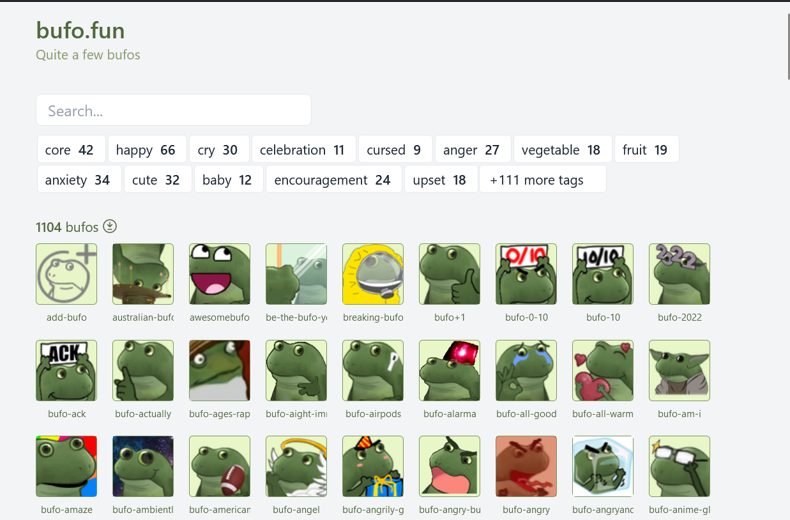
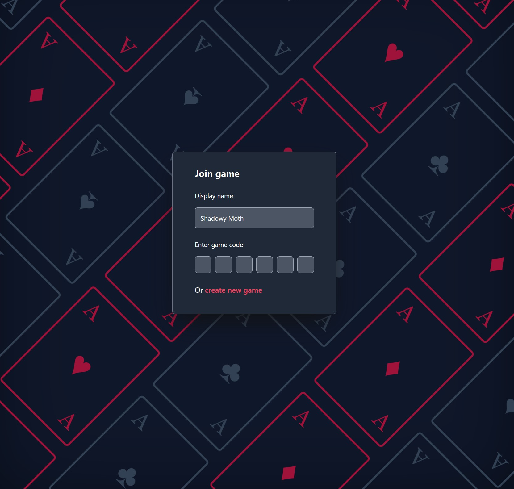

Current Projects
TypeRacing.io
An online multiplayer typing game where you compete in real-time races to complete phrases. Test your typing speed and accuracy against players from around the world.
typerace.io
A competitive typing race platform where speed and precision matter. Challenge yourself and climb the leaderboards as you type your way to victory.
CL Tanks
A multiplayer tank battle game built with command-line aesthetics. Navigate the battlefield, strategize your attacks, and dominate the arena in this terminal-inspired combat experience.
LunaVoxol
A voxel-based space exploration game set on the moon. Mine resources, build structures, and explore the lunar landscape in this creative sandbox adventure.
Past Projects
bufo.fun
A web application to help with bufo discovery and importing into your servers. Making it easy to find and integrate the perfect bufo for your needs.

Factory Game Era 3
The third iteration of my factory game project. I continued from where I left off, creating a new Unity project while reusing the core package. The main focus was implementing peer-to-peer networking, which resulted in a compelling multiplayer system. After 4-5 months of development, I decided to pivot to a smaller project.
Aces
An online multiplayer version of Aces, a card game my family loves. The objective is to create sets of 3 or more cards and empty your hand by fitting all cards into sets. Features an entirely serverless backend architecture, which presented interesting challenges for implementing WebSocket connections.

Zombie Defense Typing Game
A typing game concept that's been on my backlog, where typing progress causes survivors to fire their weapons at approaching zombies. I experimented with Synty assets to focus more on gameplay mechanics, though this approach didn't work out as well as I'd hoped.
Solitary Keep
After investing significant time in the factory game, I wanted to create something smaller using the existing codebase. The code was flexible enough to support a tower defense game without much modification, so I started building one. Unfortunately, I didn't finish this project.
Factory Game Era 2
After working on the zombie defense typing game, I returned to the factory game with a complete rebuild. The goal was to minimize development time in Unity and maximize time in a proper code editor. To achieve this, I moved most game logic into a separate package with unit tests that could be imported into Unity. This architectural decision proved to be excellent, though I eventually moved on to other projects.
Fly by Night
A remake of the first game I completed, which was an enhanced version of the classic helicopter flash game. Navigate through challenging obstacles in this mobile arcade experience.
Factory Game Era 1
I pivoted my mobile hex grid tower defense game into a factory-building game. The landscape design turned out great, but the development cycle was challenging. Having complex game logic tightly coupled with Unity made debugging slow and tedious, as the only way to test was by playing through the game.
Hex Grid Tower Defense Game
A conquest-based tower defense game set on a hex grid landscape. The structure you're defending is a trebuchet sieging enemy fortifications. I had a lot of fun creating the map system, but struggled to make the gameplay as engaging as I'd hoped.